Wang Jun王濬
206–285
Governor of Yi Province who spent seven years building the great fleet, melted the river's iron chains with torches of sesame oil, and sailed into Shitou to receive the last emperor's surrender.
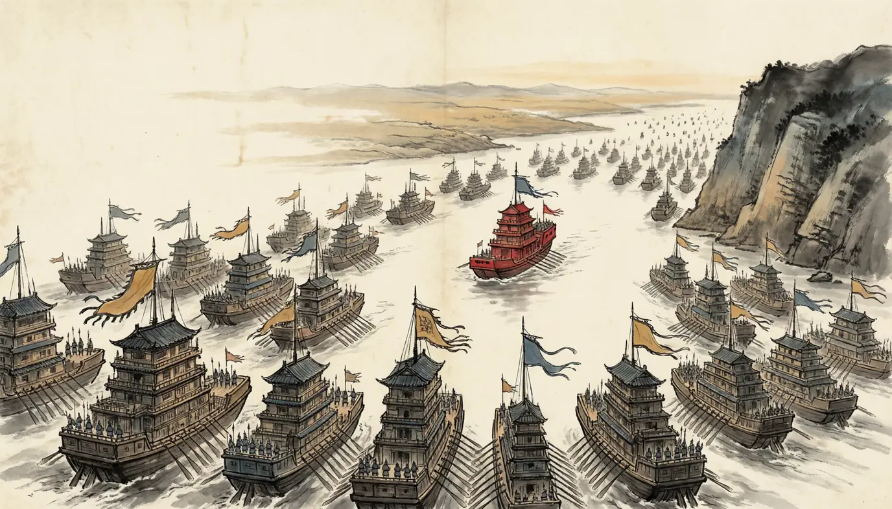
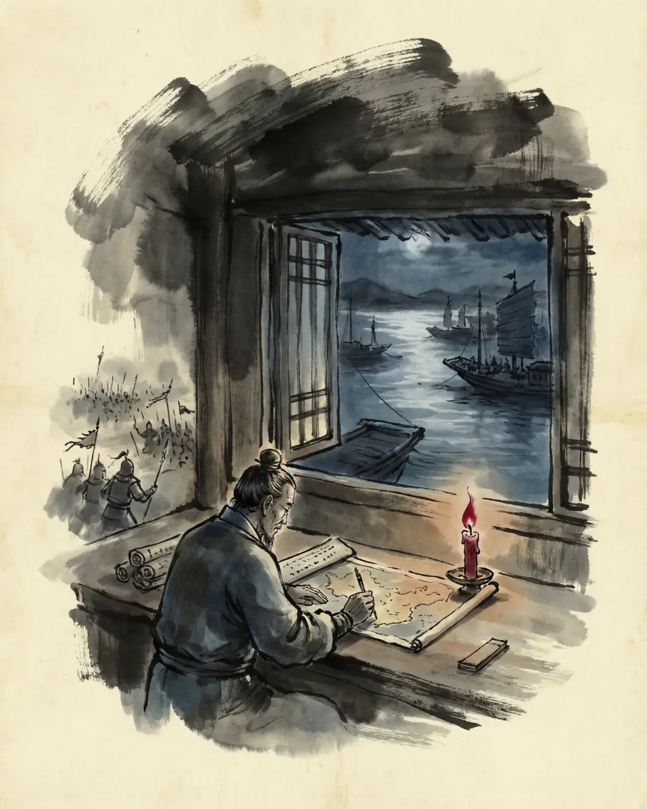
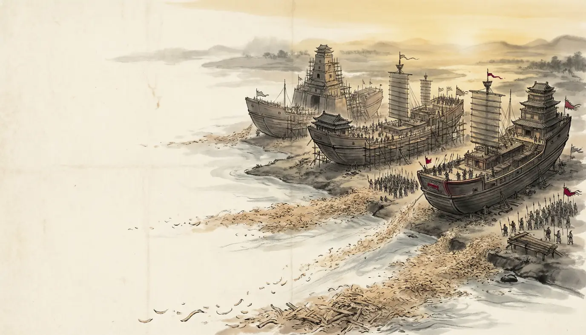
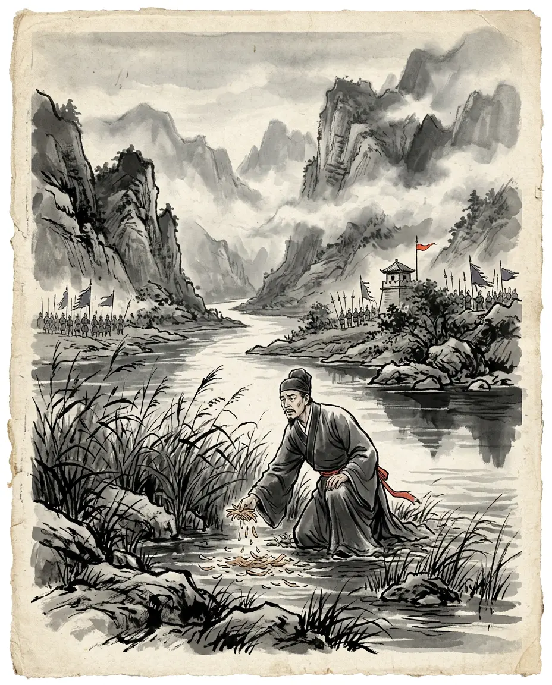
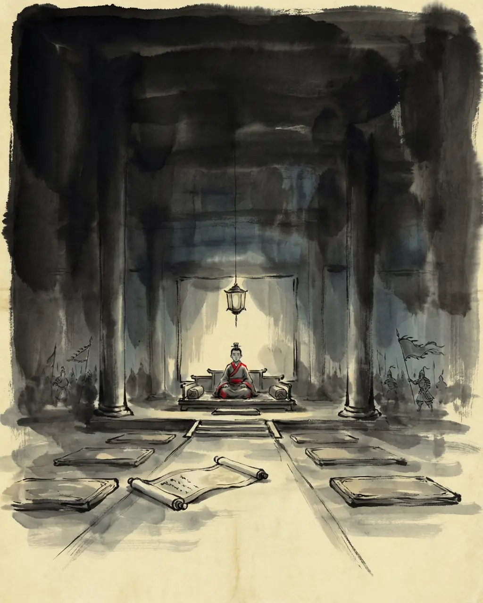

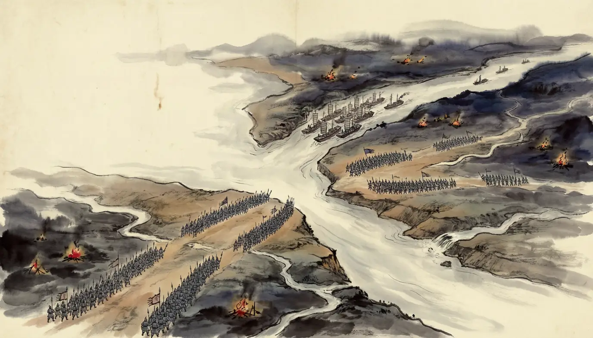
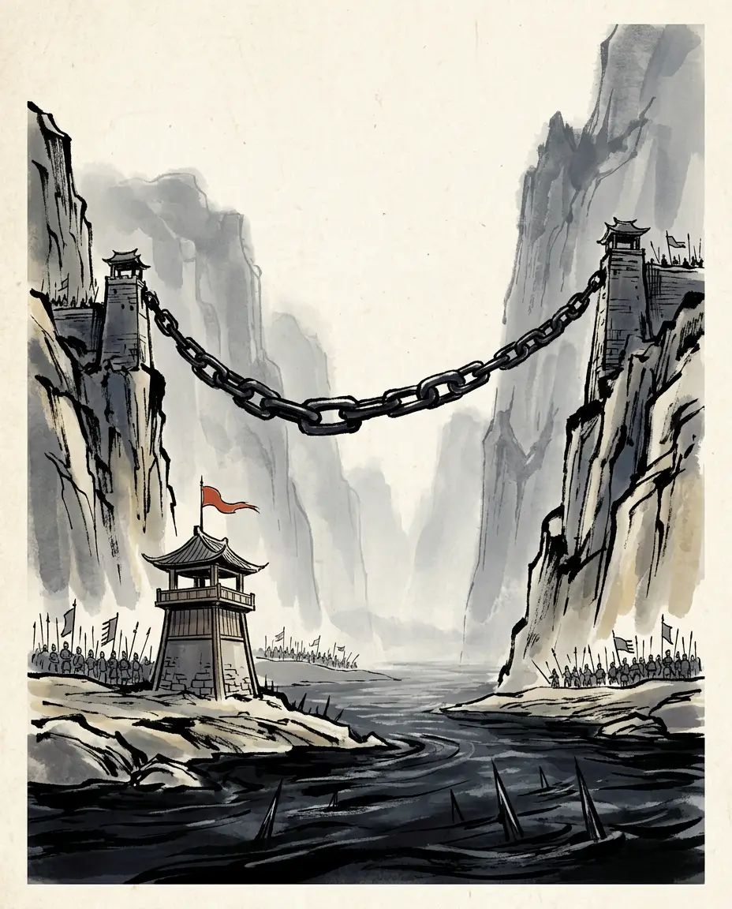
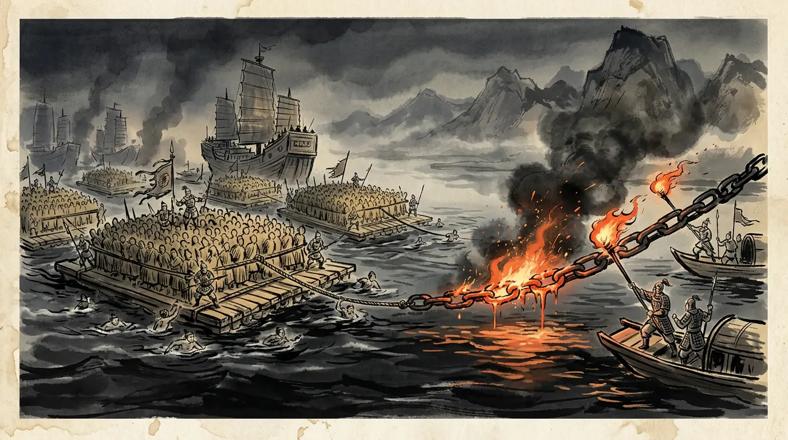
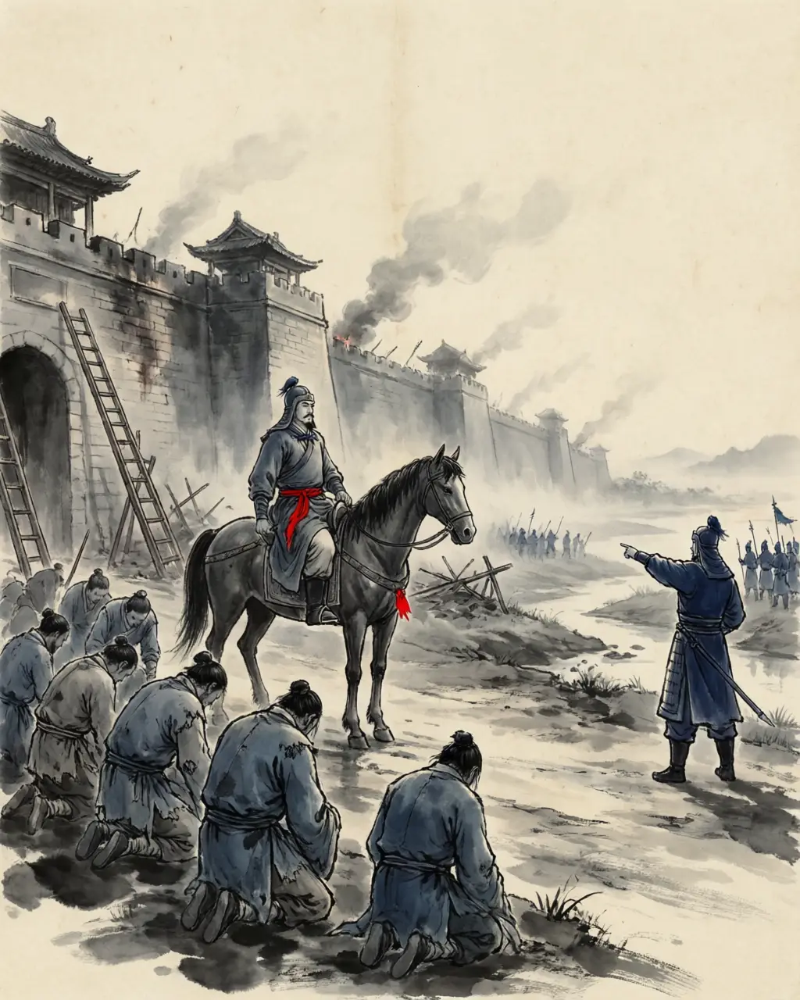
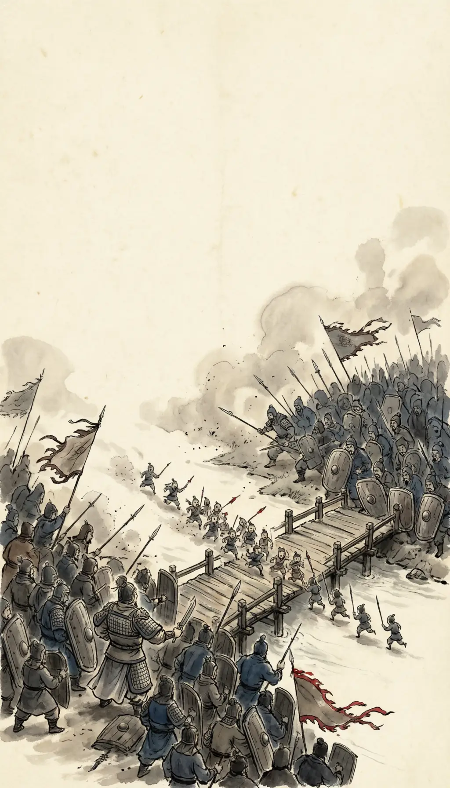
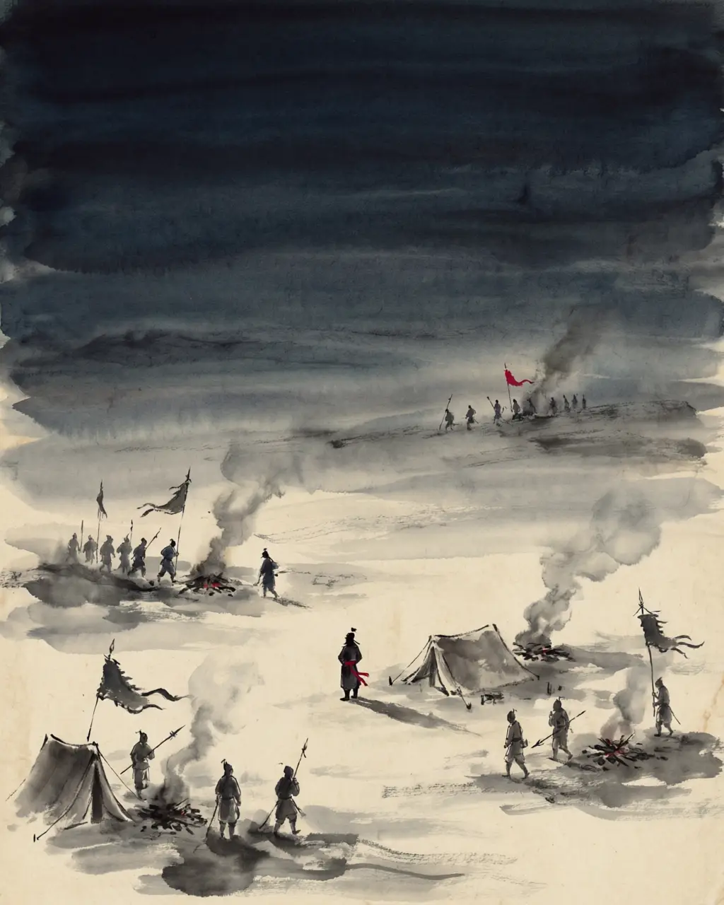
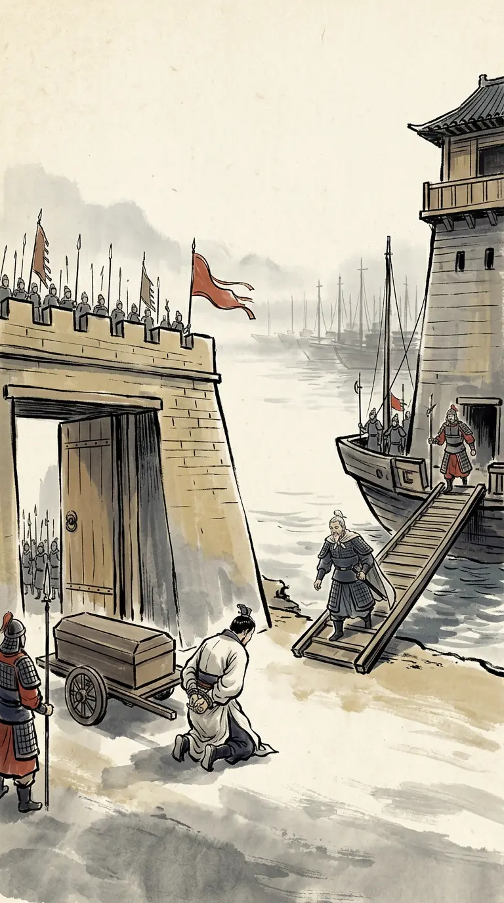
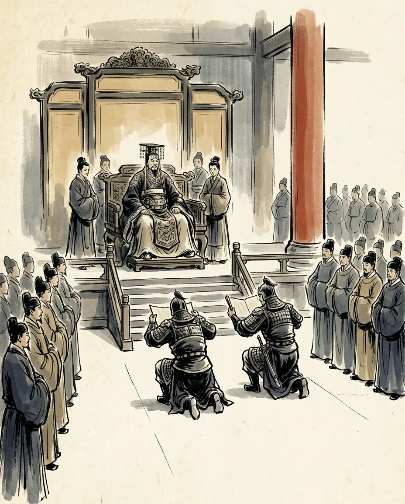
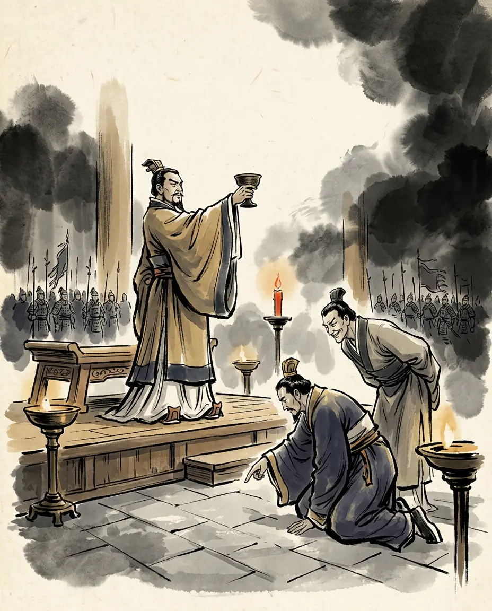
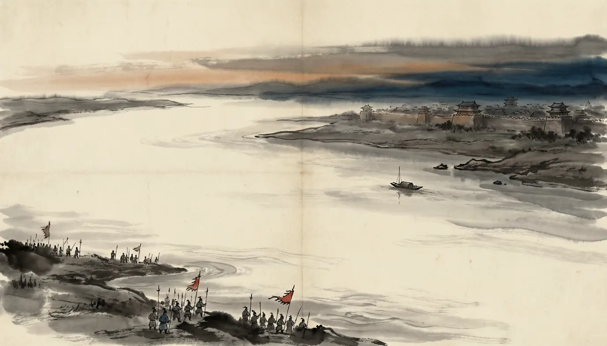
The people who carried this year. The sources disagree about almost everything else.


The novel Romance of the Three Kingdoms is a masterpiece — and not a source. Where its famous scenes depart from the histories, we leave them out of the story and put them here.
The novel opens with 'empires long divided must unite, long united must divide' — and closes the fall of Wu as destiny's tidy moral arc, the last page of one clean story.
The record shows a planned conquest: seven years of shipbuilding, six columns of over two hundred thousand men, and a Jin court divided over whether to launch at all — all aimed at a state that had already lost the will of its own officials. And the unity was not the moral the novel implies: within a decade the house of Jin was at war with itself, and the peace of 280 did not last a generation.
Wu fell in one great last battle on the river, with its emperor dying in the fight.
The last field army was destroyed at Banqiao in the third month; Tao Jun's relief force melted away in the night without striking a blow; and Sun Hao came to the army's gate with his hands bound and a coffin, was sent to Luoyang as the Marquis of Guiming, and died there in 284. The end was a surrender, not a last stand.
Wang Jun's fleet fought its way down the whole river and won the war alone.
The invasion was six columns: Du Yu took Jiangling by assault and momentum in the first month, Wang Hun destroyed Zhang Ti's field army at Banqiao, and the fleet broke the middle-river defences in the second month and reached Shitou after the defending army had ceased to exist. The victory was a system, not a flotilla.
The exchange at the surrender banquet — Sima Yan's 'I have kept this seat for you a long time' and Sun Hao's 'your servant too set up a seat in the south to await Your Majesty' — is the novelist's flourish to give the fallen tyrant one last spark of face.
It is in the record: the Zizhi Tongjian keeps the whole banquet, including Jia Chong's taunt about the flaying and eye-gouging and Sun Hao's answer that such is the penalty for subjects who murder their lord. The novel needed to invent nothing here; the histories had kept it all along.
Every caption and quotation in this episode traces to one of these. Where scholars disagree, the panel says so.
Before this: Episode 11 · The Gate and the Trackless Road (Chengdu, 263 CE). Or meet the cast, or read the chronology of the age.